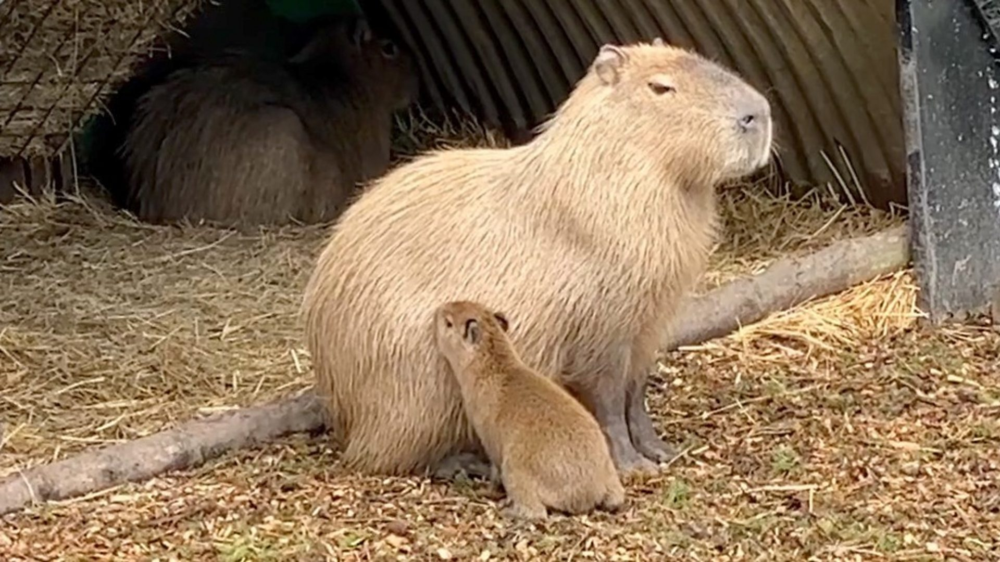

O kapibarach
Kapibara, znana również jako karpincha, jest największym gryzoniem na świecie. Występuje w Ameryce Południowej i jest znana ze swojego spokojnego i towarzyskiego charakteru. Kapibary są często spotykane nad brzegami rzek i stawów, gdzie mogą pływać i żywić się roślinami wodnymi.
Losowy fakt o kapibarach
Kapibary są bardzo towarzyskie i często żyją w grupach, które mogą liczyć nawet 100 osobników.